Debugging regression faults with RADAR
You can use RADAR to debug regression faults. In particular RADAR identifies the chain of behavioral anomalies caused by the regression fault that lead to the failure; the inspection of the anomalies will help you to debug the fault.
RADAR identifies anomalies by comparing the behavior of the upgraded software with the behavior of the base version of the software. To this end RADAR:
- Records traces that capture the runtime behavior of the base and upgraded version of the software software.
- Derives models that generalize the behavior observed during the execution of the base version of the software.
- Compares the traces recorded during failing executions of the upgraded software with the inferred models, and trace the anomalies observed: unexpected data values or unexpected method invocations; these anomalies pinpoint behaviors that differ from the ones observed in passing executions of the base version, for this reason they may be relevant to understand the cause of the failure;
- Compares the traces recorded during passing executions of the upgraded software with the inferred models, and trace the anomalies observed.
- Shows to the software developer a list with the anomalies observed in failing executions (anomalies that occurred also in passing executions have been filtered out from this list).
The analysis performed by RADAR is completely automated, for this reason you need to perform only three activities to use RADAR:
- Configure RADAR
- Monitor the execution of the base and upgraded version of the program using GDB.
- Analyze the anomalies identified by RADAR
RADAR identifies silent regression faults only on Unix like systems. You need to install gdb, c++filt and objdump to run RADAR. You need to compile programs with the options, -g3 -O0, to enable effective monitoring with RADAR.
Tutorial
This tutorial shows how you can use RADAR to debug a regression fault that affect the upgraded version of Store, a software that manages the warehouse of a store chain. The functionality affected by the regression regard the displaying of the items available in a particular store. In the base version of the software all the items are properly displayed, in the upgraded version the item Mac Book Pro is missing.
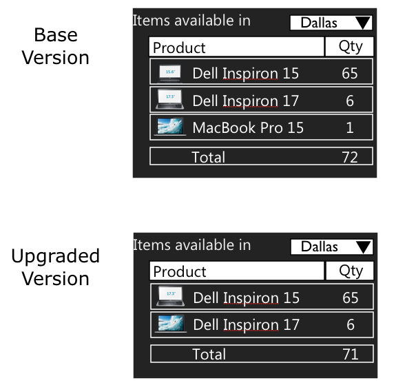To simplify the tutorial we assume that the fault is covered by a unit test for class StoreHandler the class that populates the list of available items.
The regression was introduced by a change in method Store::availableQty(string productId), this method returns the number of items available for a given product ID. The upgraded version of the softwrae returns -1 when a product does not belong to the store catalogue. Altough this new behavior is valid (it corresponds to new specifications), it causes a regression in method StoreHandler::availableItems(list ids). Figure shows the implementation of method StoreHandler::availableItems. Method availableItems act like a filter, given a list of items that should be shown on the GUI, it returns a list with the name of the items available in a particular store.
Following paragraphs show how a software developer can use RADAR to debug a regression fault that affect Store, a software that manages the warehouse of a Store chain.
Step 0: Import the example workspace
We provide an Eclipse workspace with two versions of the Store software.
Download the compressed workspace with the two C++ project from this url
http://www.lta.disco.unimib.it/downloadsLTA/tools/bct/workspaceStore.tar.gz.
Uncompress the .tar.gz workspace, for example in ~/workspaceCPP_RegressionExample.
Then compile the two C++ projects:
cd ~/workspaceStore/Store_V1/
make clean
make
cd ~/workspaceStore/Store_V2/
make clean
make
Then open the workspace in Eclipse:
path/to/eclipse -data ~/workspaceStore/
Step 1: Create the RADAR Monitoring configuration
To use RADAR to identify silent regression faults, you need first to create a RADAR C++ Monitoring configuration.
You can create the RADAR monitoring configuration either in one of the two projects of the workspace, or in a separate project. We suggest to create a separate project by clicking on New>Project>Generic>Project. Name the project Analysis.
You can create a new configuration by right clicking on the project where you want to save the RADAR monitoring configuration and by clicking on new>Other>RADAR>RADAR C/C++ Regression Configuration..
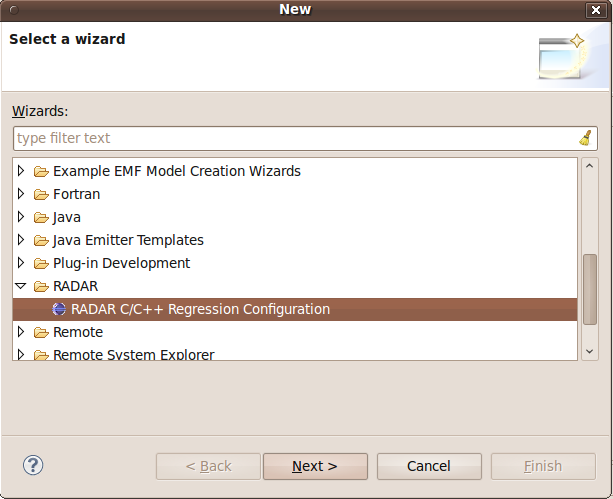RADAR asks to enter a name for the new configuration, use CheckStore for example.
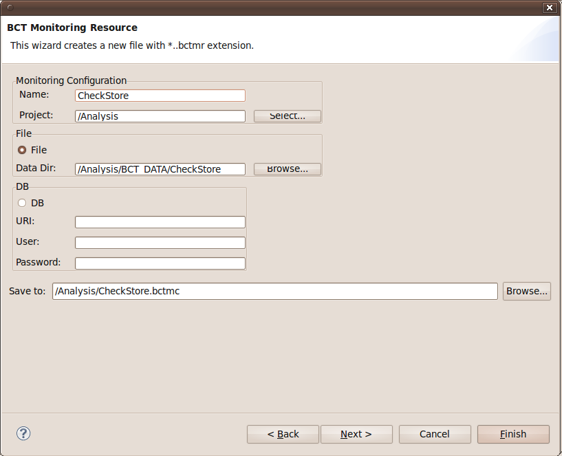After pressing next RADAR asks for the paths of both the source folder and executable of the stable and modified version of the software. Enter the following paths (write your HOME dir path instead of the ~ symbol):
- Original software source folder: ~/workspaceStore/Store_V1/src.
- Original software executable: ~/workspaceStore/Store_V1/Store.
- Upgraded software source folder: ~/workspaceStore/Store_V2/src
- Upgraded software executable: ~/workspaceStore/Store_V2/Store.
After pressing Finish RADAR prepare the environment for running the analysis: compares the two software sources to identify the modified functions, generates the gdb configuration files required for monitoring the software, and creates the monitoring configuration file Analysis/CheckStore.bctmc.
The monitoring configuration file Analysis/CheckStore.bctmc plays a central role in the use of RADAR for debugging regression faults. This file in fact not only contains all the configuration options that can be opened with an editor, but it also provides access to the data generated by RADAR, and is an entry point for executing RADAR analysis. By right clicking on the monitoring configuration file you can visualize the RADAR menu that allows the execution of the analysis. By expanding the RADAR configuration file, you can access all the data recorded and generated by RADAR: traces, models, analysis results. The following figure shows the tree associated with the RADAR configuration, from the figure it is possible to observe the name of the FSA models associated with this file.
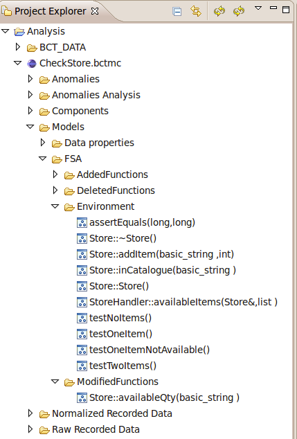If you double click on the monitoring configuration file Analysis/CheckStore.bctmc the configuration editor opens. This editor allows you to tune RADAR execution. This editor shows three tabs: Resource location, Components Configuration, Regression Analysis Configuration.
Tab Resource location simply shows information about the configuration files stored by RADAR. 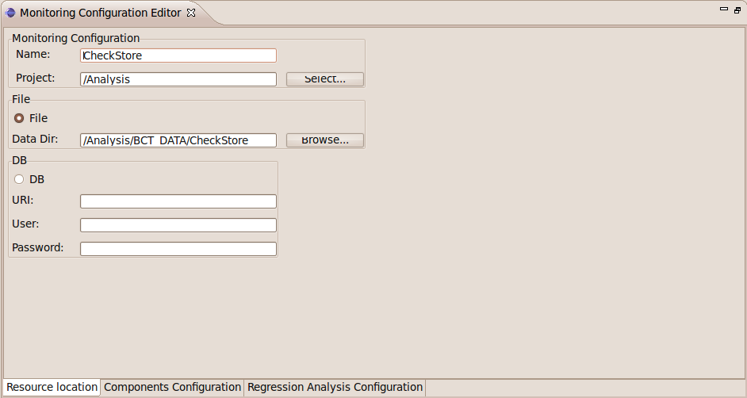Tab Components Configuration shows the target functions, i.e. the functions that are impacted by the change. These functions by default correspond with the modified functions. RADAR groups these functions by change type. The list item named ModifiedFunctions contains the list of functions that have been modified in version 2, AddedFunctions and DeletedFunctions contain the functions that have been respectively added and deleted in version 2. By pressing button add you can add new functions to the set of monitored ones.
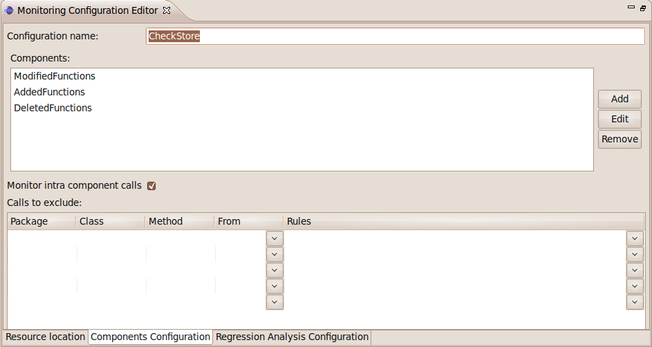To show the functions that have been modified in version 2 of Store you can click on ModifiedFunctions and press Edit. In this case only function availableQty have been modified, so this will be the only function appearing in the list. For the same reason AddedFunctions and DeletedFunctions are empty.
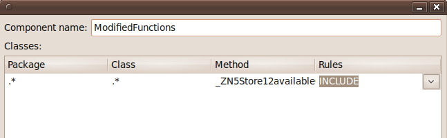
Tab Regression Analysis Configuration shows the location of the base and upgraded versions of the software, and a list of configuration options that allows to tune RADAR execution.
| Option | Description |
|---|---|
| DLL | Used when the executable is a shared library. |
| Use demangled names | Force the usage of demangled names in the regular expressions used for matching the functions to monitor. |
| Monitor project functions only | If set, RADAR uses as targets only the functions defined within the source files contained in the source folder (does not monitor libraries). |
| Monitor calls to library functions | If set, RADAR will monitor also calls from a target function to a library function. |
| Simulate termination of function calls not terminated at the end of the trace | If the program is stopped during the execution some of the monitored calls are not terminated (the exit point is not recorded in the trace). This option simulate the termination of these functions by adding virtual exit points. |
| Filter out function calls not terminated | If the program is stopped during the execution some of the monitored calls are not terminated (the exit point is not recorded in the trace). Similarly also when monitoring calls to certain OS functions implemented with assembly code the exit point is not captured by RADAR. This option ignores single function calls not terminated. |
| Filter out functions not terminated at least once | If the program is stopped during the execution some of the monitored calls are not terminated (the exit point is not recorded in the trace). Similarly also when monitoring calls to certain OS functions implemented with assembly code the exit point is not captured by RADAR. This option ignore all the calls to functions that are not terminated at least once. |
| Monitor function Enter/Exit points | If set RADAR monitors enter the entry/exit point of each monitored function. |
| Trace all lines of monitored functions. | If set RADAR monitors all the lines executed by a monitored function. |
| Derive function invariants. | If set RADAR also identifies the data properties that hold within the whole function body. |
| Monitor local variables. | If set, RADAR record the value of the local variables. |
| Derive line invariants. | If set, RADAR record the value of global variables (to speed up monitoring RADAR monitors only variables whose name appear in the compilation unit that contains the monitored function). |
| Monitor functions called by target functions. | If set, RADAR monitors also the execution of the functions that are called by the functions indicated in Components Configuration. Since Components Configuration by default lists the functions modified by the upgraded version of the software, this options is used to monitor callers of the modified functions. |
| Record calling context data. | If set, RADAR record also the values of the local variables of caller of the function under execution. |
| Exclude line info from FSA. | FSA represent the sequences of operations performed by a function/method. If this option is set, RADAR derives FSA that capture only the sequences of functions invoked by the function, otherwise the FSA capture both the sequences of executed lines and functions. |
| Exclude unused variables. | If set RADAR does not report anomalies that regard variables whose name does not appear in the code of the function under execution. |
| Monitor also callers of modified methods. | If set, RADAR monitors also the execution of the functions that are called by the functions indicated in Components Configuration. Since Components Configuration by default lists the functions modified by the upgraded version of the software, this options is used to monitor callers of the modified functions. |
| Trace all lines of children. | If set, RADAR trace the execution of all the lines of the functions called by the target functions. |
| Monitor added and deleted functions. | If unset, RADAR does not trace the execution of the functions listed in Tab Components Configuration under the items AddedFunctions and DeletedFunctions. |
| Hide added and deleted functions from models. | If set, RADAR hides the entry and exit points of added and deleted functions. This implies that RADAR does not generate neither the FSA nor the data properties for these functions. This option is useful to properly handle refactorings. |
| Monitor only not modified lines. | If set, RADAR does not monitor modified lines. This is useful because modified lines may lead to false positives. |
| Use updated names in models. | If set, RADAR use the ids of the upgraded software when building models form the original software. In practice if line 5 of the base software corresponds to line 8 of the upgraded software, the model for line 5 will be named as it was line 8. This is necessary to filter out false positives. |
By clicking on button Refresh components to monitor you can update the list of monitored components after performing some more changes to the program, e.g. after modifying another method of class Store.

Step 2: Monitor the execution of the stable and modified version of the software
The Help button in the Regression Analysis Configuration tab of the Monitoring configuration editor shows the commands to execute to monitor the two programs.

Execute the following commands to monitor the stable version of Store:
cd ~/workspaceStore/Store_V1
GDB_CONFIG=~/workspaceStore/Analysis/CheckStore/BCT_DATA/CheckStore/conf/files/scripts/originalSoftware.gdb.config.txt
GDB="gdb -batch -silent -n -x $GDB_CONFIG --args"'
$GDB ./Store
You then need to monitor the upgraded version of Store. To improve RADAR results is better to monitor passing and failing test cases separately. Execute the following commands to monitor the upgraded version of Store:
cd ~/workspaceCPP_RegressionExample/WorkersMap/Debug
GDB_CONFIG=~/workspaceCPP_RegressionExample/WorkersMap_validation/BCT_DATA/WorkersMap-v2-validation/conf/files/scripts/originalSoftware.gdb.config.txt
GDB="gdb -batch -silent -n -x $GDB_CONFIG --args"'
#this command monitors the passing test cases
$GDB ./Store testNoItems testOneItem testOneItemNotAvailable testTwoItems testHandlerAllItemsAvailable
#this command monitors the failing test case
$GDB ./Store testHandlerSomeItemsAvailable
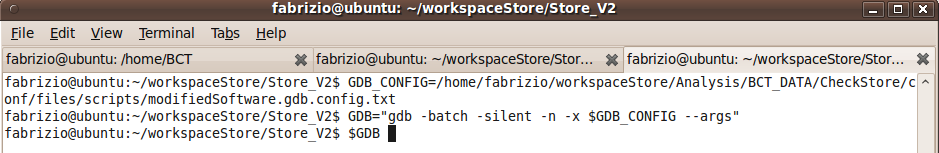
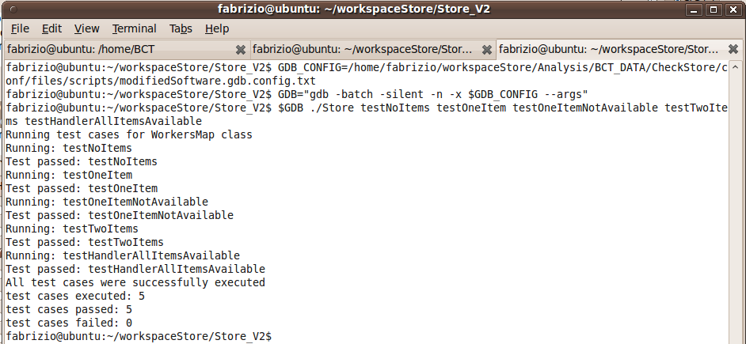
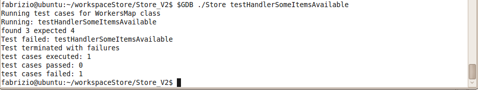
After the monitoring two trace files are available in the workspace (if you do not see the traces press F5 on the Analysis project to refresh folder contents ):
- one for the stable version of the software, Analysis/BCT_DATA/CheckStore/validTraces/gdb.monitor.txt,
- one for the new (and buggy) version, Analysis/BCT_DATA/CheckStore/tracesToVerify/gdb.monitor.txt.
Step 3: Analyze the Traces
You can analyze the traces by right clicking on the monitoring configuration file, and by selecting RADAR/Analyze Traces. A wizard with different options will open; these option tune the inference of the models used to identify anomalies in the execution of the upgraded software. You can simply use the default options of the wizard.
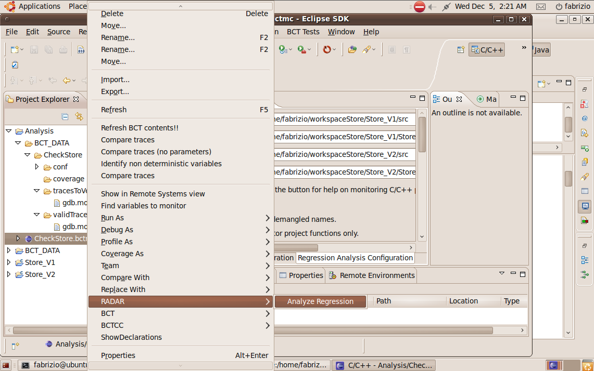 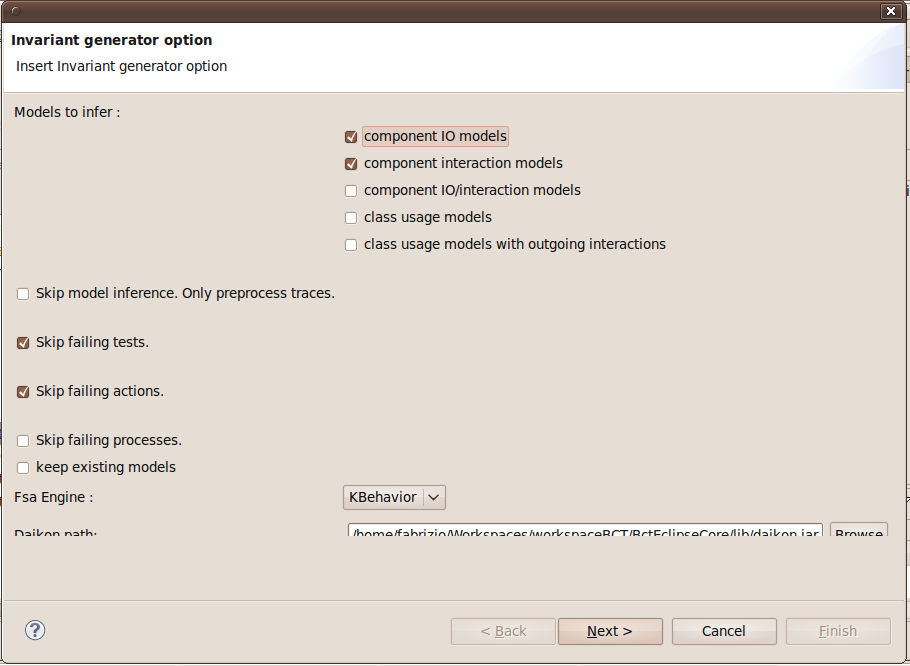 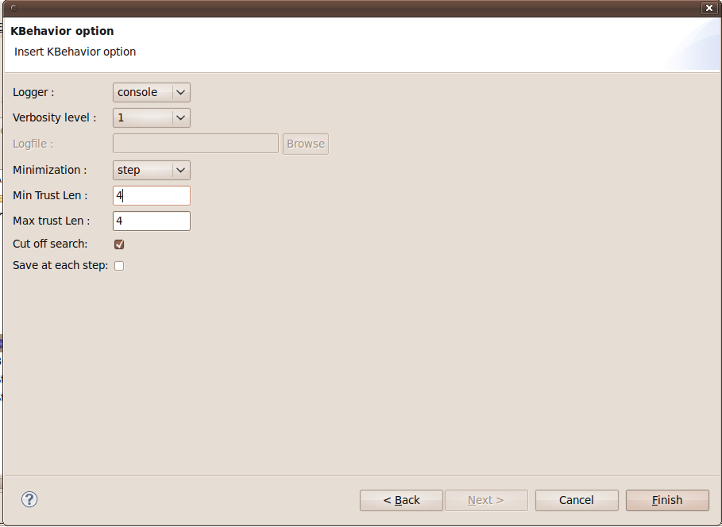The RADAR analysis proceed in three steps:
- Process the traces recorded by GDB and generates readable traces;
- Infer models that capture the behavior of the base version of the software;
- Identify anomalies in the trace recorded during the failing execution of the software.
- variable items is unexpectedly equal to -1;
- the anomaly propagates and causes the unexpected execution of line 29;
- in valid executions line 29 was executed only if variable storeItems was null. The execution of line 29 thus causes teh overwriting of list storeItems.
After identifying anomalies RADAR automatically opens and editor with the list of anomalies found. The anomalies reported by RADAR helps understanding the problem, in fact they show that:
If you double click on an anomaly in the list RADAR opens the source code editor and highlights the line that caused the anomaly. The first anomaly in the list shows that the data property items >= 0 that was expected to hold before the execution of line 33 was violated during the execution of the failing test. The property view on the bottom of Eclipse show the actual value of variable items, which is -1.
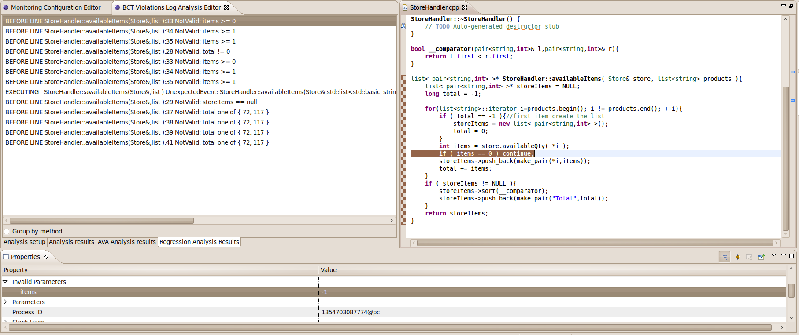The anomaly propagates through the execution of the loop, and is identified during the execution of lines
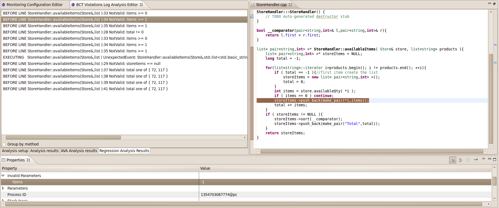 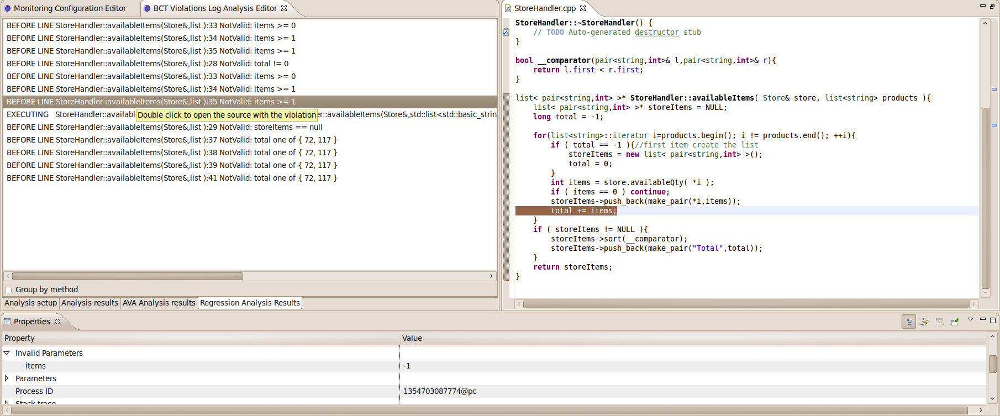The propagation of anomalous values caused the unexpected execution of line 29.
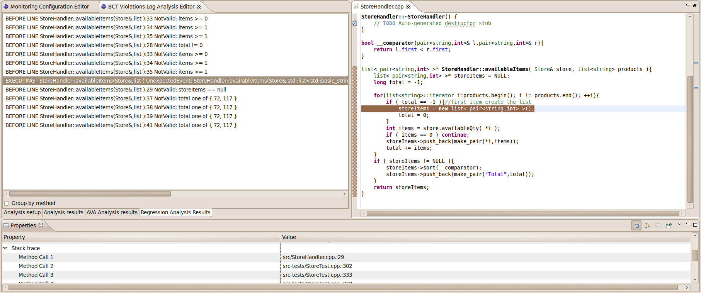In passing executions line 29 was executed only when storeItems was equal to null. In the failing execution it isn't, this means that the software overwrote an already assigned list (this is the reason of the failure, all the items already present in the list are lost).
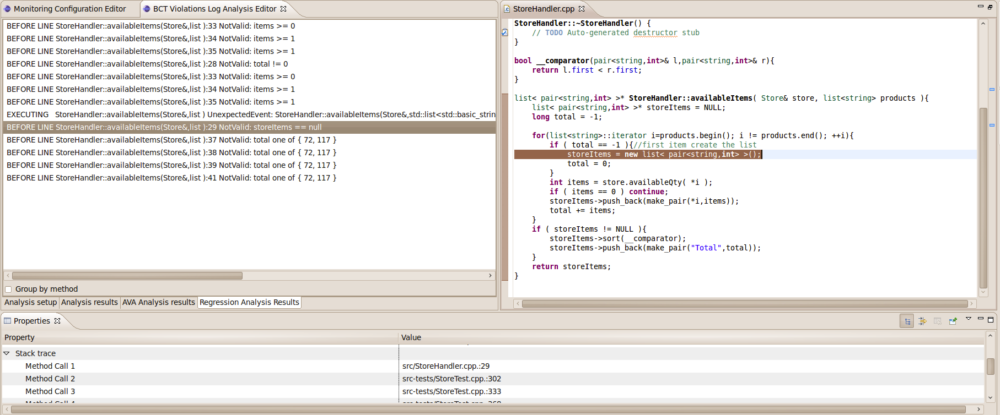 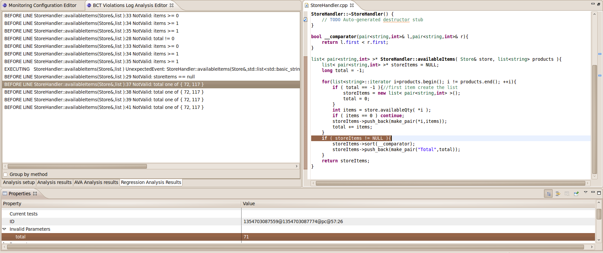The Analysis Setup tab of the anomalies editor allows to tune the analysis of the anomalies by manually identifying failing executions or by selecting the analyzed failure.
RADAR automatically detects failing executions on the basis of their return value (programs returning 0 are considered passing). In case this criterion does not work, you can select the failing processes from the list of processes shown in tab processes (failing processes are checked).
RADAR automatically analyzes all failing executions monitored. This could be useless in presence of multiple faults, in this case in fact it could be better to analyze each test failure singularly. To analyze each test failure singularly you can select the id of the failing process in the menu named Analyze Failure and the press the button Regression Analysis, tab Regression Analysis Result will contain a list of anomalies identified during the execution of the selected process only.
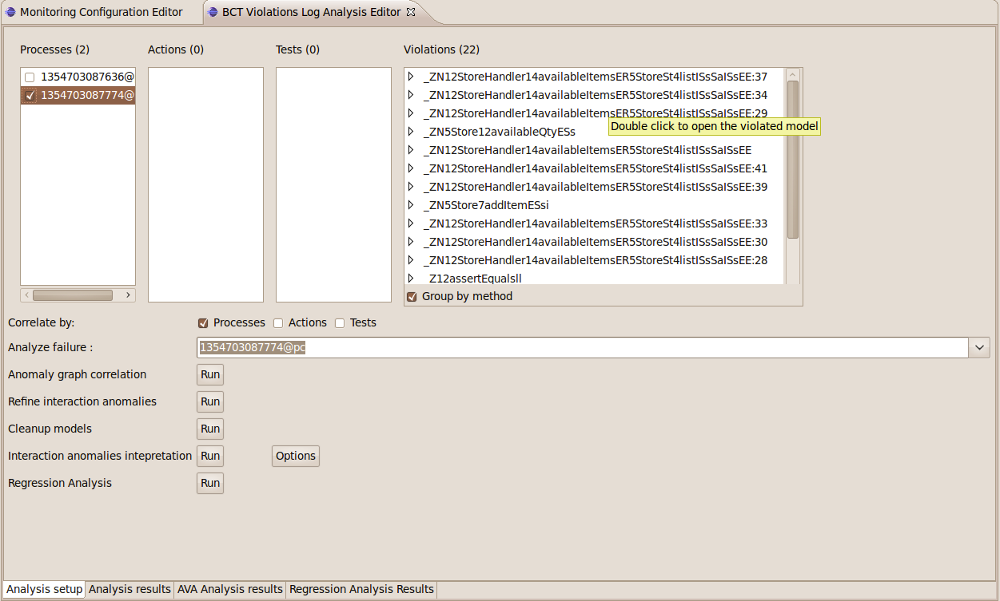Additional Features
Inspect Recorded Traces
You can inspect the sequence of events monitored by RADAR. To this end you need to expand the RADAR configuration in Analysis/CheckStore.bctmc, under Raw Traces/Interaction Traces the list of traces recorded by RADAR is shown. In this case we have two traces: one for the passing execution of the original version of the software, one for the passing execution of the upgraded version of the software, one for the failing execution of the upgraded version of the software.
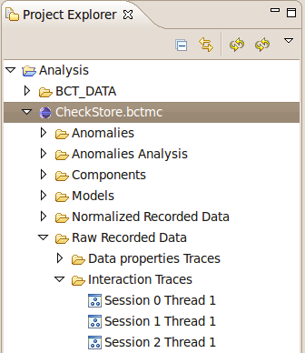A trace shows the sequence of monitored program points. When you select a program point the values of the monitored variables are shown in the Program Point View. The following picture shows that when entering method testNoItems the value of variable passingTestCases<.em> was 0.
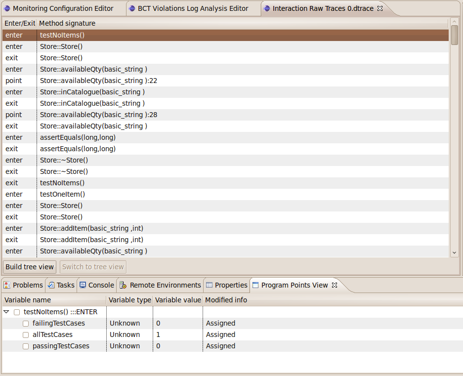Inspect Clustered Data
RADAR provides additional views that allow to inspect the recorded data clustered in ways that ease its inspection. In particular it allows to either inspect the values of all the program variables recorded during the execution of a specific program point (e.g. line 29 of StoreHandler.cpp); or to visualize all teh sequences of operations (function calls and executed lines) performed by a particular method (e.g. availableItems).
By selecting one of the program points listed in Normalized Recorded Data/Data Properties Traces you can inspect the values recorded during all the executions of that particular porgram point. The following image shows for example the values recorded during the executin of the enter and exit points of function availableQty. The figure shows that in one call the return value is 0.
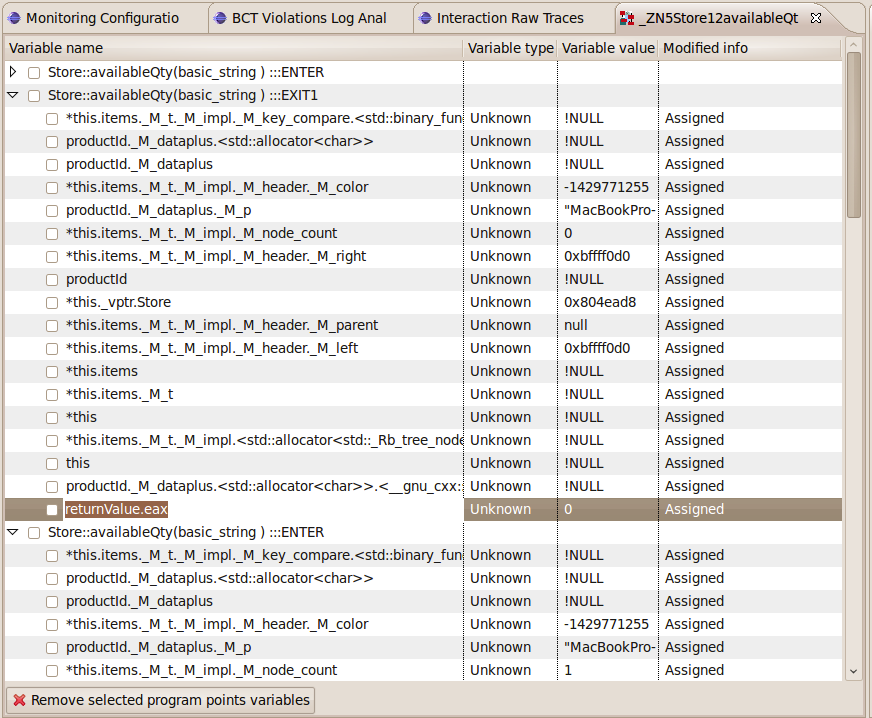By selecting one of the functions listed in Normalized Recorded Data/Interaction Traces you can visualize the sequences of operations performed by a function. The following image shows for example that function have executed twice in passing test cases (only two function calls are listed listed). By expanding the tree associated with a function call you can visualize the operations performed by the function: it first executes lines 24, 25, 27, 28, 29, 30, 32, then invokes method availableQty, then executes line 33, and so on.
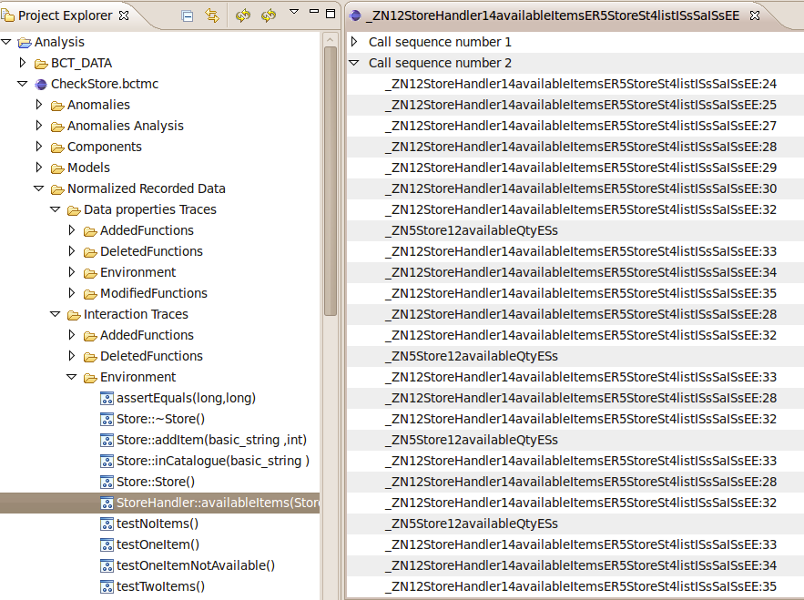Visualize Models
RADAR allows to open the models derived from the data. Folders Normalized Recorded Data/Data properties and Normalized Recorded Data/FSA list the derived Data properties and FSA respectively.
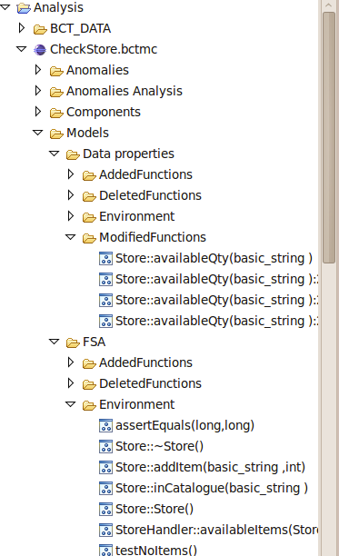The following image shows the data properties derived for the program points set at the enter and exit locations of method Store.availableQty. They show for example that the return value is always greater (or equal) than 0.
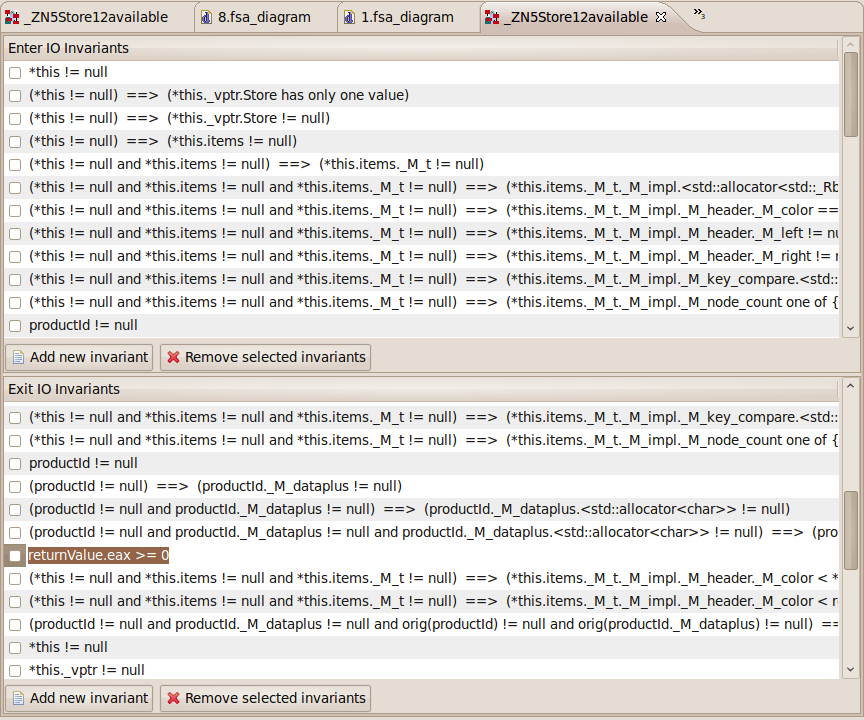The following image shows the data properties derived for the data recorded at the beginning of execution of line 29 in file StoreHandler.cpp (this line belongs to function availableItems). They show for example that variable storeItems is always equal to null, and that the value of variable total is -1.
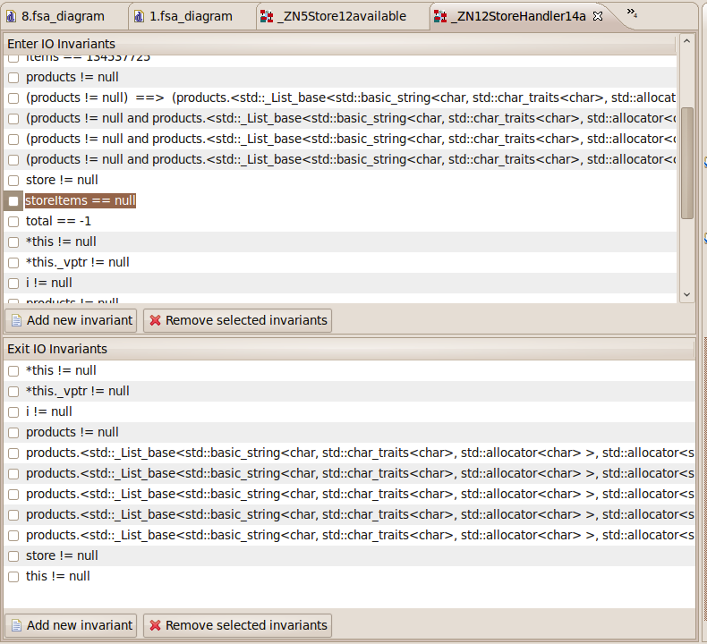The following image shows the FSA for method Store.availableQty, the model shows that the method, within line 22, checks if the item is in the catalogue, and then either terminates in line 28, or executes line 26 and then terminates. Please note that since GDB set breakpoint before the execution of a line, all the label in a FSA that refer to a line number indicate that the line was already to be executed (this is why function inCatalogue is seen after line 22 in the automata).
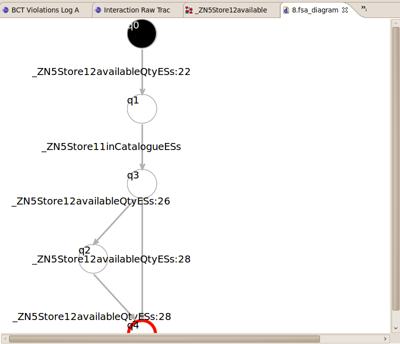